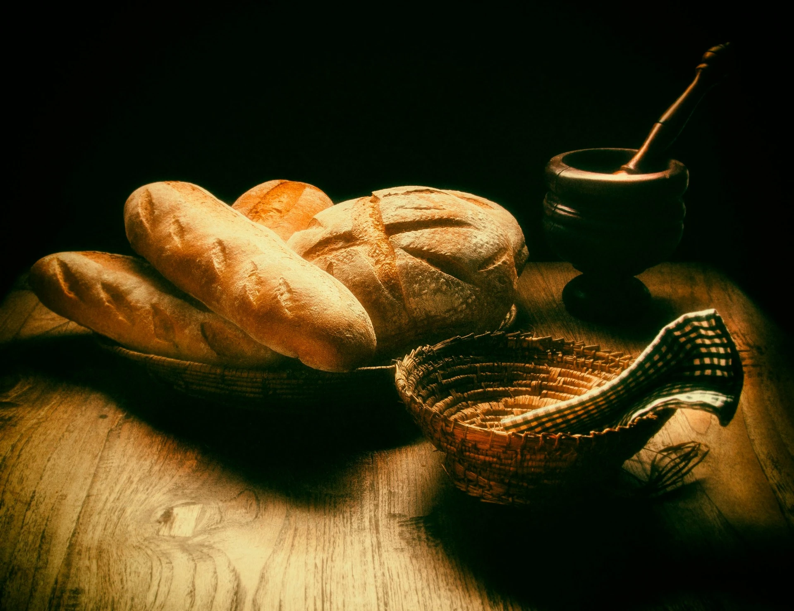
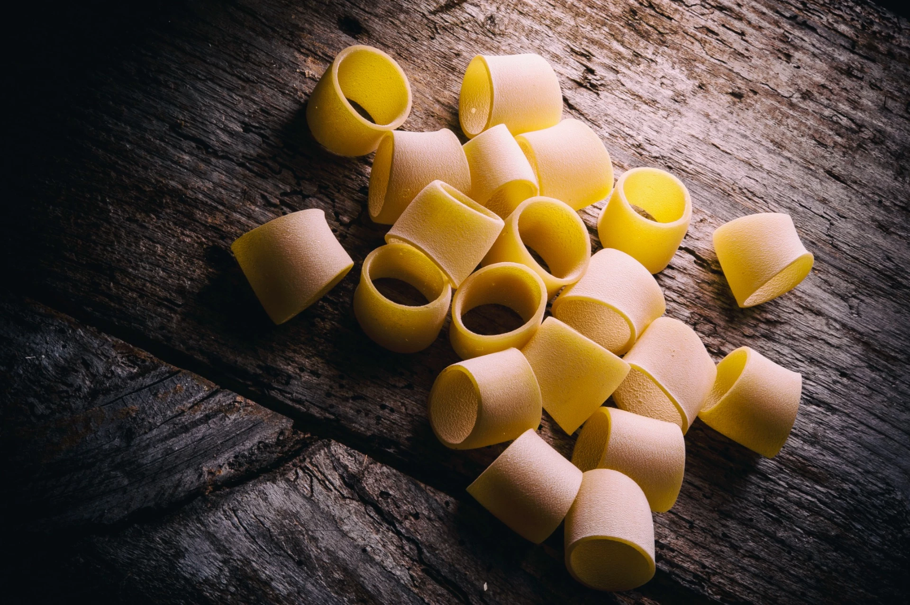
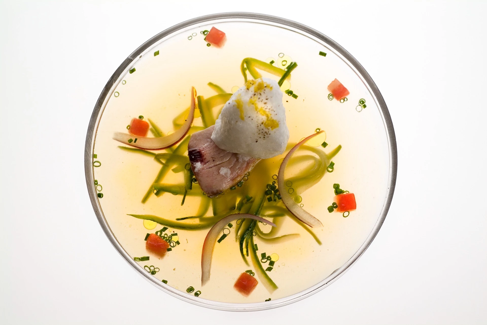

Fotografie








Ennio Calice fotografa il cibo, gli oggetti e il lavoro. Si occupa di fotografia editoriale e pubblicitaria e porta avanti una ricerca personale di reportage.
Tra i suoi libri fotografici Note di gusto, Agata e Romeo e Cuochi di marca.